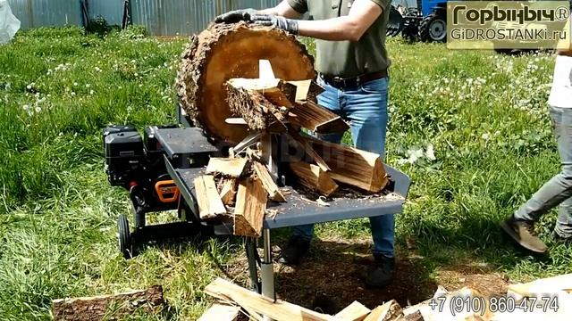

Принцип работы дровокола «Горыныч»
Дровокол «Горыныч» работает на основе гидравлического принципа передачи усилия. В отличие от ручной рубки колуном, где сила создаётся человеком, в данном устройстве основную работу выполняет гидравлическая система. Это позволяет создавать большое давление и раскалывать даже плотную и крупную древесину с минимальными физическими усилиями со стороны оператора.
Основной механизм работы
В основе конструкции лежит взаимодействие двигателя, гидравлического насоса и гидроцилиндра. После запуска двигателя начинает работать насос, который нагнетает гидравлическое масло в систему. Под давлением масло поступает в гидроцилиндр, заставляя его шток двигаться вперёд.
Движение штока передаётся на полено: либо полено проталкивается к неподвижному колуну, либо сам колун движется навстречу заготовке. В результате создаётся мощное давление, под действием которого древесина раскалывается по естественным волокнам.


Роль гидравлической системы
Гидравлическая система позволяет значительно увеличить прикладываемую силу. Даже компактный дровокол способен развивать усилие в несколько тонн. Давление создаётся за счёт замкнутого контура, в котором циркулирует рабочая жидкость.
- Насос, создающий давление.
- Распределительный клапан, управляющий направлением движения.
- Гидроцилиндр, преобразующий давление в поступательное движение.
- Бак с рабочей жидкостью.
После завершения хода штока оператор переводит рычаг управления, и цилиндр возвращается в исходное положение, готовый к следующему циклу работы.
Рабочий цикл
- Укладка полена на рабочий стол.
- Фиксация заготовки в устойчивом положении.
- Запуск движения штока при помощи переключателя или рычага управления.
- Раскалывание древесины под действием давления.
- Возврат штока в исходное положение.
Благодаря автоматическому возврату и стабильной работе гидравлики процесс повторяется быстро и равномерно.

Безопасность и эффективность
Использование гидравлического принципа делает работу более безопасной по сравнению с ручной рубкой. Оператор не выполняет резких ударных движений, что снижает риск травм. Конструкция предусматривает устойчивую раму и надёжную фиксацию полена во время раскола.
Кроме того, равномерное давление позволяет аккуратно разделять древесину без сильных осколков и хаотичных разлётов частей.
Итог
Таким образом, принцип работы дровокола «Горыныч» основан на преобразовании энергии двигателя в гидравлическое давление, которое создаёт мощное и контролируемое усилие раскалывания. Это обеспечивает высокую производительность, надёжность и удобство эксплуатации при заготовке дров.